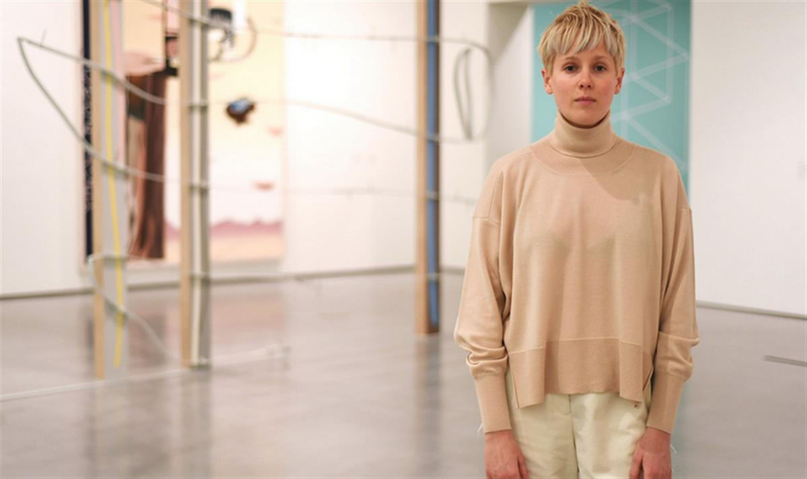
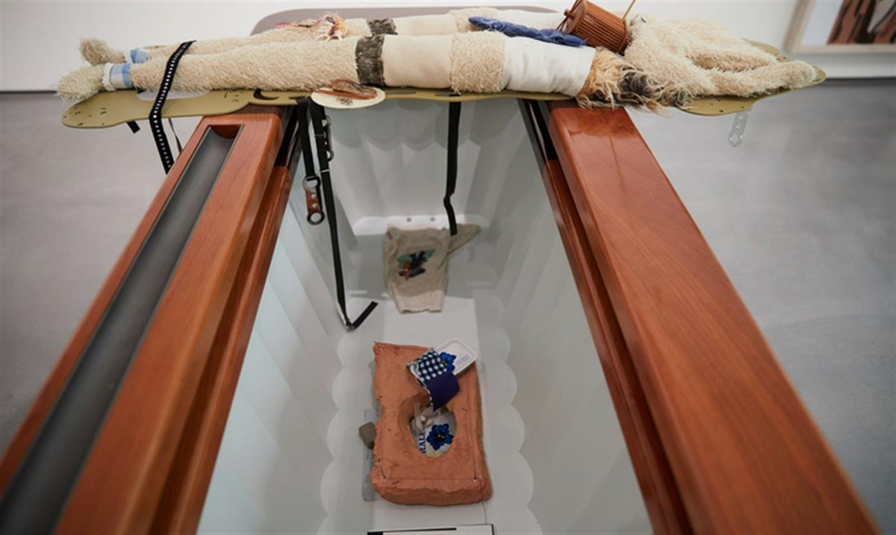

Helen Marten speaks after collecting the prize during a ceremony at the Hepworth Wakefield gallery on Thursday. Photograph: Anthony Devlin/PA
@nadiakhomami
Friday 18 November 2016 22.00 GMT
Helen Marten says she will split her winnings with the three other nominees as ‘hierarchical position of art prizes is flawed’
The winner of the inaugural Hepworth prize for sculpture has pledged to share the £30,000 award with her fellow nominees.
Helen Marten, who is also nominated for December’s Turner prize, picked up the biennial award on Thursday at the Hepworth Wakefield gallery, where she told guests about her plan to split it with the Phyllida Barlow, Steven Claydon and David Medalla.
She then told BBC Radio 4’s Front Row: “To a certain extent I believe, as I said on stage, in the light of the world’s ever lengthening political shadow, that the art world has a responsibility, if not to suggest a provisional means forward, then at least show an egalitarian platform of democracy. I believe the hierarchical position of art prizes today is, to a certain extent, flawed.
“I’m flattered to be there anyway and I would be very happy if they accept to share the prize amongst the four of us.”
While dividing the prize money means Marten would get £7,500, she said receiving a significantly smaller sum was not something she was concerned about – despite the high costs of creating art shows. “I’m lucky enough to be here and to be given a visible and audible platform to be doing what I’m doing,” she said, “and the fact that I’m supported by an enormously generous infrastructure of other artists, critics, curators, galleries, is enough for me.”

The organisers of the Hepworth prize said it was “entirely up to Marten” how she used the prize money. “We support her decision to split it between the artists and think it a gracious and generous suggestion,” they added.
The art critic Alastair Sooke, who was one of the judges of the prize, said Marten won because the judges felt that “in Helen Marten, we have one of the most exciting talents that’s emerged in recent years within British art … what I love about Helen’s work is it has a tremendous coherence, she manages to assimilate all these different unusual objects, so many of them, almost reflecting our up and down digital world.”
Marten, 31, who is originally from Macclesfield in Cheshire, studied at the Ruskin School of Fine Art, University of London and at Central Saint Martins in London.
The award comes in what is proving to be a successful year for the artist, who won critical praise for her show at the Serpentine in London. Other recent exhibitions include 2014’s Parrot Problems at the Fridericianum in Kassel, Germany, and Plank Salad at the Chisenhale gallery in London in 2012.
Her sculptures feature a large amount of materials used in odd and unexpected ways. Pieces on display at the Hepworth include steel, wood, a toy snake, tennis ball, cast bronze, wicker, leather, shell, fired clay, dried vegetables, cigarettes, milk cartons and cherry stones.
It took the judges about two hours to pick a winner. Simon Wallis, the gallery’s director and chair of the judging panel, said: “Frankly I would have enjoyed having a lot longer because the debates and arguments were fascinating.” He said there was something “fresh, exciting and new” about Marten’s work; she was an artist who was “one of the strongest and most singular voices working in British art today”.
He added: “We are seeing something that really does expand the boundaries of this protean art form that is sculpture.”
The Hepworth prize was set up to recognise a UK-based artist of any age and at any stage in their career who has made a significant contribution to the development of contemporary sculpture. It was created to celebrate the gallery’s fifth anniversary and is named after Barbara Hepworth, who was born and brought up in Wakefield, West Yorkshire.

Marten’s prize was presented by Christopher Bailey, the chief creative and chief executive officer of fashion brand Burberry, who said he was proud to have been part of the ceremony. “I am so excited for not only Helen Marten on winning the first ever Hepworth prize for sculpture, but also for the rest of the incredibly talented nominees. Their work on display at the Hepworth Wakefield is a shining example of their creativity and outstanding contribution to the development of contemporary sculpture in the UK.”
In sharing her prize, Marten follows in the footsteps of the American artist Theaster Gates, who last year pledged to share the £40,000 Artes Mundi prize with his nine fellow nominees.
Earlier this week, the human rights lawyer Philippe Sands, who won the Baillie Gifford prize for nonfiction, said he would donate his £30,000 prize money to a refugee charity. “Individuals make a difference at difficult times, and even in the face of adversity it is possible to make a mark … [these ideas] are under threat by the government in this country, they will be under threat from the next government in the United States and the book is a salutary reminder we must take absolutely nothing for granted,” Sands said in his acceptance speech.
SOURCE: THE GUARDIAN